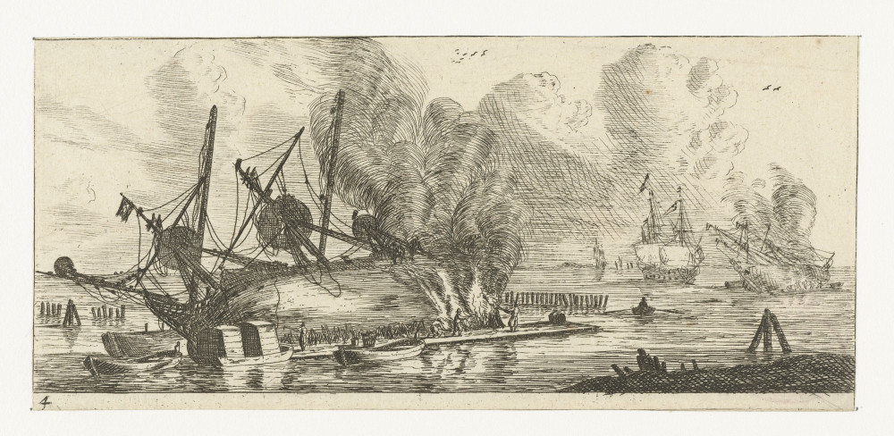
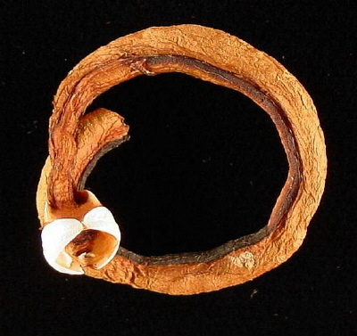
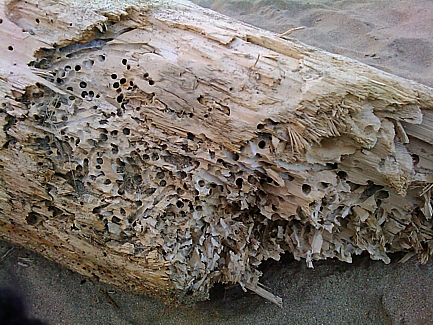
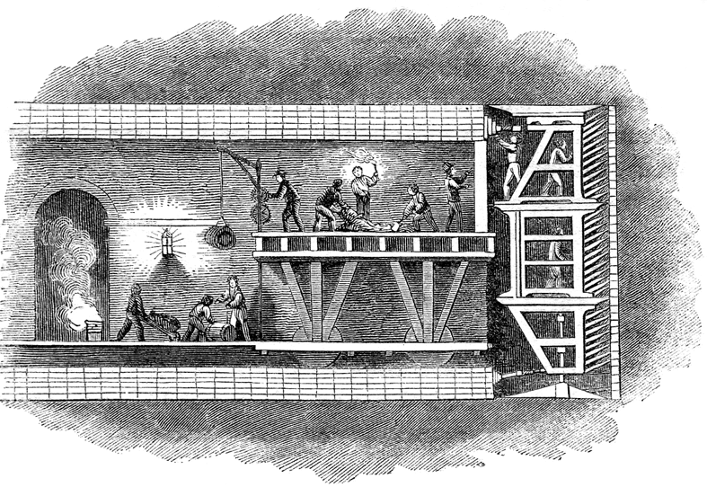
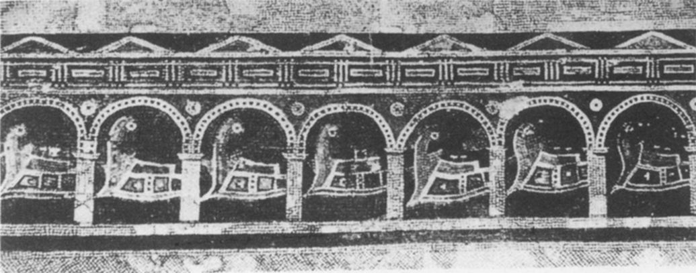

Обработка подводной части корабля против корабельных червей и обрастания
В заключительной части комедии Аристофана «Всадники» (424 г. до н.э.) хор исполняет песню о том, как триеры пришли на собрание и самая старшая из них рассказала о происходящих в городе событиях: «Один дурной гражданин по имени Гипербол потребовал 100 триер для экспедиции в Карфаген.» При этом известии самая юная из триер воскликнула, что никогда Гипербол не будет командовать ею и что она предпочитает быть изъеденной червями и состариться здесь. Другая внесла предложение: раз проект об экспедиции нравится афинянам, плыть на всех парусах в Тезейон или в святилище Эвменид и искать там убежища. (Аристофан. Всадники. 1300–1310. Пересказ сделал В.В. Головня)
Мы приводим этот пассаж из-за двух строк Аристофана, которые нас интересуют в свете нашего рассказа о греческих триерах, а именно тех, где упоминаются корабельные черви:
‘ἀποτρόπαἰ οὐ δῆτ᾽ ἐμοῦ γ᾽ ἄρξει ποτ᾽, ἀλλ᾽ ἐάν με χρῇ,
ὑπὸ τερηδόνων σαπεῖσ᾽ ἐνταῦθα καταγηράσομαι
Если ж нужно, то состарюсь,
От червей здесь буду тлеть;
(пер. А.Станкевича)
Следующее упоминание этого моллюска τερηδών (Teredo navalis) в древнегреческой литературе мы встречаем почти сто лет спустя у Теофраста в «Исследовании о растениях», где разговор идет уже на профессиональном языке:
Говорят, что «морской червь» больше истачивает сосну, чем пихту: пихта суха, в сосне же имеется сладость, и ее тем больше, чем сосна смолистее. Морской червь точит все деревья, кроме маслины, садовой и дикой: их он не трогает, потому что они горьки. Морской червь точит деревья, которые гниют в морской воде, а короед и thrips — те, которые гниют в земле. Морской червь заводится только на море. Размерами он мал, но с большой головой и зубами.
Thrips похож на короеда, который постепенно пробуравливает бревна. Поправить этот ущерб легко: смола, которой обмазывают судно перед спуском на воду, затягивает все отверстия. Вред, нанесенный морским червем, исправить невозможно.
[Hist.Pl., 5.4.4]
Аристофан и Теофраст – самые ранние и достаточно информативные источники о корабельных червях, этом биче всех тепловодных акваторий Мирового океана. Хотя и называют его червем, но на самом деле это двустворчатый моллюск.

Корабельный червь (Teredo navalis L., 1758)
Просто он отличается очень длинным червеобразным телом с вздутым передним концом («большая голова» у Теофраста). Ходы, которые корабельный червь протачивает в дереве, имеют длину до 2 м и диаметр до 5 см. Проделывает он их с помощью маленькой раковины, створки которой покрыты зазубренными ребрами («зубами»). Работа червей быстро разрушает всякое дерево. Дубовая свая, в которой поселились корабельные черви, через 4-5 лет становится уже негодной.

В начале XIX века поведение и анатомия корабельного червя вдохновили французского инженера Марка Брюнеля. Пронаблюдав, как створки раковины корабельного червя одновременно позволяют ему прокладывать ход и защищают его от давления разбухающей древесины, Брюнель спроектировал модульную железную конструкцию для прокладки тоннелей — проходческий щит, позволивший рабочим успешно прокладывать тоннель под очень нестабильным руслом Темзы.

Изображение XIX века, возможно из Illustrated London News.
Аристофан и Теофраст знали, о чем говорили. Аристофан жил в эпоху наибольшего расцвета триер, когда сотни таких кораблей участвовали в морской войне на стороне Афин, а Теофраст находился в непосредственном контакте с флотоводцами первых эллинистических правителей. С легкой руки этих древнегреческих писателей образ корабельных червей стал широко использоваться в работах античных авторов как синоним скрытого, но неотвратимого разрушения изнутри. (Впрочем, приоритет Аристофана в этом вопросе оспаривается некоторыми схоластами, которые полагают, что цитируемый отрывок есть буквальный пересказ из более ранней комедии V в. до н.э.)
Как бы то ни было, но века спустя кораблестроители и мореплаватели осознали грозящую опасность и стали искать пути противостояния ей. Наибольшее распространение получили крытые эллинги, о которых мы говорили ранее, и перемещение гребных кораблей на берег на весь зимний период. Установлено, что хранение галер в межсезонье на берегу увеличивало общий срок их службы в два раза. Такая операция вела к гибели всего поколения корабельных червей предыдущего года. Следует отметить, что кратковременное осушение корпуса корабля не является гибельным для моллюсков, так как они закупоривают свою ячейку, сохраняя в ней воду, необходимую для их жизнедеятельности. Правда, деформации и напряжения, возникающие при вытаскивании корабля на берег, разрушают ходы моллюсков, что ведет к их осушению и гибели червей.
Сохранившиеся записи о продолжительности службы афинских триер дают основание для утверждений, что в среднем этот срок составлял 20 лет, а по некоторым данным и того больше. В то же время поставленные уже в наше время эксперименты показывают, что корабельное дерево в морской воде может продержаться 4-5 лет, после чего безнадежно разрушается корабельными червями. Сопоставляя эти две цифры, обычно делается вывод, что большую часть своей службы античные триеры проводили на берегу. Но здесь мы натыкаемся на некие подводные камни. И главный из них: в экспериментах исследуются конструкции из незащищенного дерева, в то время как на практике уже в то время корабельные корпуса защищались различными способами. Ведь еще в Ветхом Завете мы читаем, что повелевая Ною сделать ковчег, господь говорит:
Сделай себе ковчег из дерева гофер; отделения сделай в ковчеге и осмоли его смолою внутри и снаружи.
Бытие, Глава 6, стих 14
И в последовавшие за этим исторические времена имеется множество разнообразных, литературных и материальных, свидетельств того, что на корпуса судов наносили различные защитные покрытия. Неудивительно, что и в Илиаде, и в Одиссее излюбленным эпитетом Гомера для корабля является «черный». Единственное материальное свидетельство, оставшееся от триер, – таран из Атлита, – подтверждает, что «смола была везде: в швах и на поверхности, поверх таранного бруса и вокруг штевня» (J. R. Steffy, 1999). Таким образом, мы приходим к выводу, что заключение о периоде, который античные гребные суда проводили на берегу, требует уточнения.
Наличие покрытия корпуса требовало также более деликатного подхода к вытаскиванию кораблей на берег, при возможности используя для этой цели «фаланги» (см. предыдущий пост), и избегая волочения корабля по песку или гальке.
Все те проблемы, с которыми сталкивались моряки Древней Греции, были свойственны и флоту Рима.

Римские триеры в крытых береговых эллингах navalia, на левом берегу Тибра
На берег вытаскивали даже самые крупные корабли. Так, когда римляне захватили флагманский корабль македонского царя Персея, они построили для него специальный крытый эллинг.
Вот как пишет об этом Тит Ливий:
Сам Павел (Луций Эмилий Павел) прибыл в Рим спустя несколько дней — он поднялся вверх по Тибру на царском корабле, столь громадном, что двигали его гребцы в шестнадцать рядов, украшенном македонской добычей — отменным оружием и царскими тканями. По берегам толпился народ, высыпавший встречать полководца.
Царевы корабли, захваченные у македонян, невиданно огромные, вытащили на Марсово поле.
(Livy 45.35.3 и 42.12)
Борьба с червоядием была одной из важнейших задач и в русском флоте, особенно для тех его соединений, которые базировались в Черном море. На протяжении многих лет моряки-черноморцы вели поиски состава, который был бы «достаточным к удержанию червей от вступления в дерево и источения онаго». Но более подробно о том, как боролись с червями и другими напастями в более поздние эпохи, мы поговорим в последующих постах.